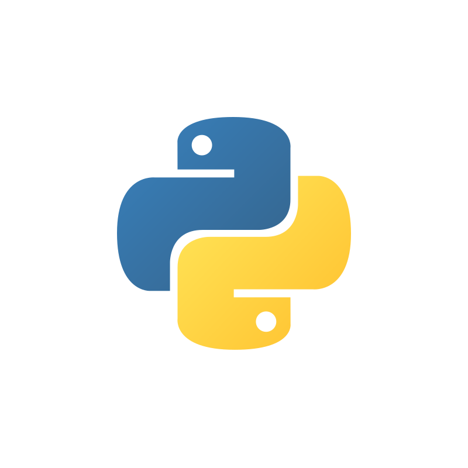
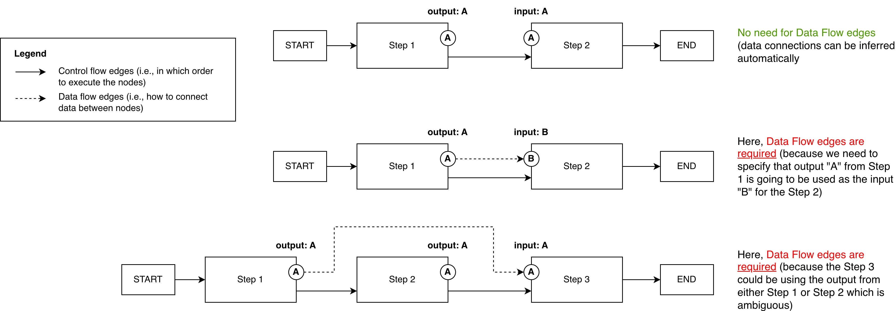
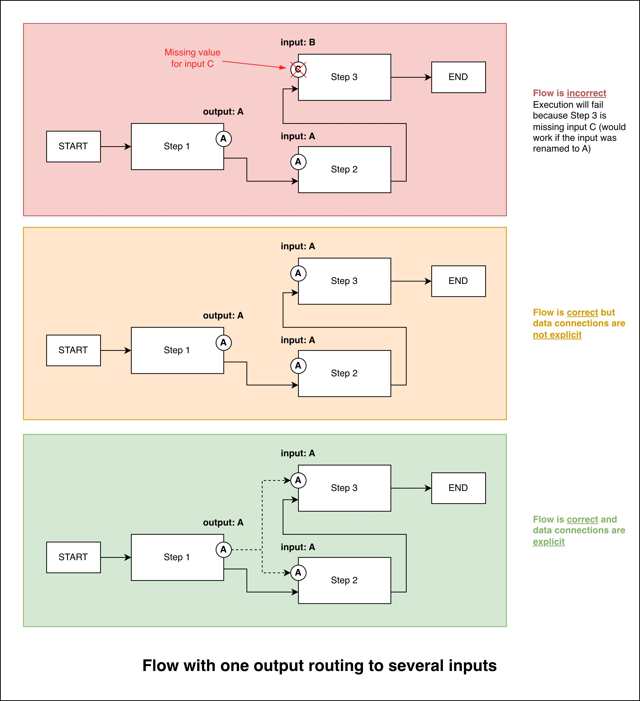
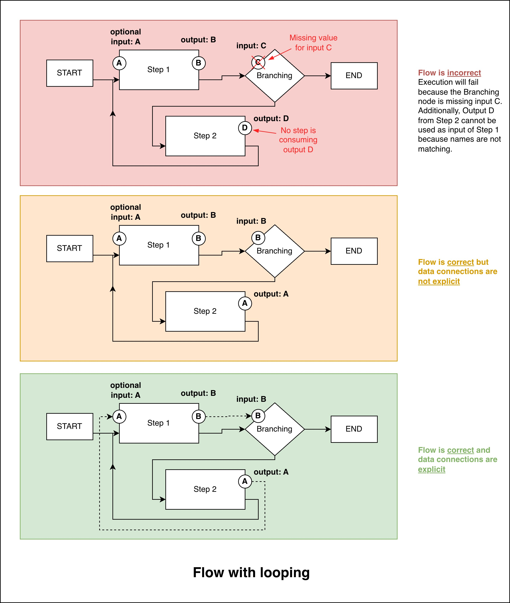

Data Flow Edges: What are they, when are they needed?#
{kind=link}

Download Python ScriptPython script/notebook for this guide.
WayFlow enables the creation of different types of AI assistants including Flows, which are great to use when you want to solve complex tasks with an orchestrated sequence of operations.
Building a Flow requires you to define a few different components, including the steps that make up the Flow, the Control Flow edges between those steps (i.e., in which order should the steps be executed), and finally the Data Flow Edges that define how data moves through the Flow.
Basics of Data Flow Edges#
Data Flow Edges have one main purpose: defining how data outputs from one step are passed as inputs to another step.
In some simple Flows, WayFlow can automatically infer how data should flow between steps. However, in more complex scenarios, you may need to explicitly define Data Flow Edges to ensure that data is routed correctly.
Here is a simple illustration to explain this concept:
{kind=link}

We have three examples:
In the first Flow (at the top), the output from Step 1 is named the same way as the input of the Step 2 (A). Therefore, WayFlow can automatically infer that the output from Step 1 should be passed as input to Step 2.
In the second Flow (in the middle), Step 2’s input is named differently (B) than Step 1’s output (A). In this case, WayFlow cannot infer how data should flow between the two steps, and you need to explicitly define a Data Flow Edge to connect output A from Step 1 to input B of Step 2.
In the third Flow (at the bottom), both Step 1 and Step 2 expose an output named (A). WayFlow cannot infer which output should be passed to Step 3. Therefore, you need to define two Data Flow Edges: one connecting output A from Step 1 to Step 3, and another connecting output A from Step 2 to Step 3.
Data Flow Edges in Practice#
Now let’s see more concrete examples of how you can use Data Flow Edges in your Flows.
Example 1: Data routing with multiple outputs#
{kind=link}

In this first example, Step 1 produces an output that needs to be sent to two different steps: Step 2 and Step 3.
When the name of the value is different between the steps (e.g., “A” and “B”), WayFlow cannot automatically infer the data routing, and you need to define Data Flow Edges explicitly.
When the name of the value is shared between the steps (e.g. “A” in the middle Flow), WayFlow can automatically infer the data routing without the need to define Data Flow Edges.
Tip
To improve the readability of your Flow definitions, it is recommended to always define Data Flow Edges explicitly, even when WayFlow can infer them automatically.
from wayflowcore.flow import Flow
from wayflowcore.steps import OutputMessageStep
from wayflowcore.controlconnection import ControlFlowEdge
# Flow with one step output used by two subsequent steps
producer = OutputMessageStep(name="Step 1", message_template="value", output_mapping={OutputMessageStep.OUTPUT: "A"})
consumer1 = OutputMessageStep(name="Step 2", message_template="{{A}}")
consumer2 = OutputMessageStep(name="Step 3", message_template="{{A}}")
flow = Flow(
begin_step=producer,
control_flow_edges=[
ControlFlowEdge(producer, consumer1),
ControlFlowEdge(consumer1, consumer2),
ControlFlowEdge(consumer2, None)
],
)
from wayflowcore.flow import Flow
from wayflowcore.steps import OutputMessageStep
from wayflowcore.controlconnection import ControlFlowEdge
from wayflowcore.dataconnection import DataFlowEdge
producer = OutputMessageStep(name="Step 1", message_template="value")
consumer1 = OutputMessageStep(name="Step 2", message_template="{{A}}")
consumer2 = OutputMessageStep(name="Step 3", message_template="{{A}}")
flow = Flow(
begin_step=producer,
control_flow_edges=[
ControlFlowEdge(producer, consumer1),
ControlFlowEdge(consumer1, consumer2),
ControlFlowEdge(consumer2, None)
],
data_flow_edges=[
DataFlowEdge(producer, source_output=OutputMessageStep.OUTPUT, destination_step=consumer1, destination_input="A"),
DataFlowEdge(producer, source_output=OutputMessageStep.OUTPUT, destination_step=consumer2, destination_input="A"),
],
)
Example 2: Looping Flows#
{kind=link}

In this second example, we have a Flow that includes a loop.
Similar to the previous example:
When the names of the values differ between the steps (example flow at the top), WayFlow cannot automatically infer the data routing, and you need to define Data Flow Edges explicitly.
When the names of the values are shared between the steps (middle example), WayFlow can automatically infer the data routing without the need to define Data Flow Edges.
When creating looping Flows, it is generally recommended to define Data Flow Edges explicitly to avoid confusion.
from wayflowcore.flow import Flow
from wayflowcore.steps import OutputMessageStep, BranchingStep
from wayflowcore.controlconnection import ControlFlowEdge
from wayflowcore.property import StringProperty
# Looping flow
producer = OutputMessageStep(
name="Step 1",
message_template="value{{A}}",
output_mapping={OutputMessageStep.OUTPUT: "B"},
input_descriptors=[StringProperty(name="A", default_value="")],
# ^ note that in this looping flow the default_value is required,
# read the conceptual guide for more information
)
condition = BranchingStep(
name="Branching",
input_mapping={BranchingStep.NEXT_BRANCH_NAME: "B"},
branch_name_mapping={"value": "branch1", "valueextra": "branch2"},
)
add_extra = OutputMessageStep(
name="Step 2",
output_mapping={OutputMessageStep.OUTPUT: "A"},
message_template="extra",
)
flow = Flow(
begin_step=producer,
control_flow_edges=[
ControlFlowEdge(producer, condition),
ControlFlowEdge(condition, add_extra, source_branch="branch1"),
ControlFlowEdge(condition, None, source_branch="branch2"),
ControlFlowEdge(condition, None, source_branch=BranchingStep.BRANCH_DEFAULT),
ControlFlowEdge(add_extra, producer)
],
)
from wayflowcore.flow import Flow
from wayflowcore.steps import OutputMessageStep
from wayflowcore.controlconnection import ControlFlowEdge
from wayflowcore.dataconnection import DataFlowEdge
# Looping flow
producer = OutputMessageStep(
name="Step 1",
message_template="value{{optional_value}}",
input_descriptors=[StringProperty(name="optional_value", default_value="")],
# ^ note that in this looping flow the default_value is required,
# read the conceptual guide for more information
)
condition = BranchingStep(
name="Branching",
branch_name_mapping={"value": "branch1", "valueextra": "branch2"},
)
add_extra = OutputMessageStep(name="Step 3", message_template="extra")
flow = Flow(
begin_step=producer,
control_flow_edges=[
ControlFlowEdge(producer, condition),
ControlFlowEdge(condition, add_extra, source_branch="branch1"),
ControlFlowEdge(condition, None, source_branch="branch2"),
ControlFlowEdge(condition, None, source_branch=BranchingStep.BRANCH_DEFAULT),
ControlFlowEdge(add_extra, producer)
],
data_flow_edges=[
DataFlowEdge(producer, source_output=OutputMessageStep.OUTPUT, destination_step=condition, destination_input=BranchingStep.NEXT_BRANCH_NAME),
DataFlowEdge(add_extra, source_output=OutputMessageStep.OUTPUT, destination_step=producer, destination_input="optional_value"),
],
)
Hint
You may have noticed that in the code for this looping flow, the input property A of Step 1 has a default value. This is required because in the first loop iteration, the flow has yet to produce a value for A. Later in the execution of the flow, the Step 2 produces a value for A which is then consumed by the Step 1.
Next steps#
Having learned about Data Flow Edges, you may now proceed to:
Full code#
Click on the card at the top of this page to download the full code for this guide or copy the code below.
1# Copyright © 2025 Oracle and/or its affiliates.
2#
3# This software is under the Apache License 2.0
4# %%[markdown]
5# Code Example - Data Flow Edges in Flows
6# ---------------------------------------
7
8# How to use:
9# Create a new Python virtual environment and install the latest WayFlow version.
10# ```bash
11# python -m venv venv-wayflowcore
12# source venv-wayflowcore/bin/activate
13# pip install --upgrade pip
14# pip install "wayflowcore==26.2.0.dev0"
15# ```
16
17# You can now run the script
18# 1. As a Python file:
19# ```bash
20# python conceptual_dataflowedges.py
21# ```
22# 2. As a Notebook (in VSCode):
23# When viewing the file,
24# - press the keys Ctrl + Enter to run the selected cell
25# - or Shift + Enter to run the selected cell and move to the cell below# (LICENSE-APACHE or http://www.apache.org/licenses/LICENSE-2.0) or Universal Permissive License
26# (UPL) 1.0 (LICENSE-UPL or https://oss.oracle.com/licenses/upl), at your option.
27
28
29# %%[markdown]
30## Flow with multi output routing
31
32# %%
33from wayflowcore.flow import Flow
34from wayflowcore.steps import OutputMessageStep
35from wayflowcore.controlconnection import ControlFlowEdge
36
37# Flow with one step output used by two subsequent steps
38producer = OutputMessageStep(name="Step 1", message_template="value", output_mapping={OutputMessageStep.OUTPUT: "A"})
39consumer1 = OutputMessageStep(name="Step 2", message_template="{{A}}")
40consumer2 = OutputMessageStep(name="Step 3", message_template="{{A}}")
41
42flow = Flow(
43 begin_step=producer,
44 control_flow_edges=[
45 ControlFlowEdge(producer, consumer1),
46 ControlFlowEdge(consumer1, consumer2),
47 ControlFlowEdge(consumer2, None)
48 ],
49)
50conv = flow.start_conversation()
51_ = conv.execute()
52
53# %%[markdown]
54## Flow with multi output routing with explicit edges
55
56# %%
57from wayflowcore.flow import Flow
58from wayflowcore.steps import OutputMessageStep
59from wayflowcore.controlconnection import ControlFlowEdge
60from wayflowcore.dataconnection import DataFlowEdge
61
62producer = OutputMessageStep(name="Step 1", message_template="value")
63consumer1 = OutputMessageStep(name="Step 2", message_template="{{A}}")
64consumer2 = OutputMessageStep(name="Step 3", message_template="{{A}}")
65
66flow = Flow(
67 begin_step=producer,
68 control_flow_edges=[
69 ControlFlowEdge(producer, consumer1),
70 ControlFlowEdge(consumer1, consumer2),
71 ControlFlowEdge(consumer2, None)
72 ],
73 data_flow_edges=[
74 DataFlowEdge(producer, source_output=OutputMessageStep.OUTPUT, destination_step=consumer1, destination_input="A"),
75 DataFlowEdge(producer, source_output=OutputMessageStep.OUTPUT, destination_step=consumer2, destination_input="A"),
76 ],
77)
78conv = flow.start_conversation()
79_ = conv.execute()
80
81# %%[markdown]
82## Flow with looping
83
84# %%
85from wayflowcore.flow import Flow
86from wayflowcore.steps import OutputMessageStep, BranchingStep
87from wayflowcore.controlconnection import ControlFlowEdge
88from wayflowcore.property import StringProperty
89
90# Looping flow
91producer = OutputMessageStep(
92 name="Step 1",
93 message_template="value{{A}}",
94 output_mapping={OutputMessageStep.OUTPUT: "B"},
95 input_descriptors=[StringProperty(name="A", default_value="")],
96 # ^ note that in this looping flow the default_value is required,
97 # read the conceptual guide for more information
98)
99condition = BranchingStep(
100 name="Branching",
101 input_mapping={BranchingStep.NEXT_BRANCH_NAME: "B"},
102 branch_name_mapping={"value": "branch1", "valueextra": "branch2"},
103)
104add_extra = OutputMessageStep(
105 name="Step 2",
106 output_mapping={OutputMessageStep.OUTPUT: "A"},
107 message_template="extra",
108)
109
110flow = Flow(
111 begin_step=producer,
112 control_flow_edges=[
113 ControlFlowEdge(producer, condition),
114 ControlFlowEdge(condition, add_extra, source_branch="branch1"),
115 ControlFlowEdge(condition, None, source_branch="branch2"),
116 ControlFlowEdge(condition, None, source_branch=BranchingStep.BRANCH_DEFAULT),
117 ControlFlowEdge(add_extra, producer)
118 ],
119)
120conv = flow.start_conversation()
121_ = conv.execute()
122
123# %%[markdown]
124## Flow with looping with explicit edges
125
126# %%
127from wayflowcore.flow import Flow
128from wayflowcore.steps import OutputMessageStep
129from wayflowcore.controlconnection import ControlFlowEdge
130from wayflowcore.dataconnection import DataFlowEdge
131
132# Looping flow
133producer = OutputMessageStep(
134 name="Step 1",
135 message_template="value{{optional_value}}",
136 input_descriptors=[StringProperty(name="optional_value", default_value="")],
137 # ^ note that in this looping flow the default_value is required,
138 # read the conceptual guide for more information
139)
140condition = BranchingStep(
141 name="Branching",
142 branch_name_mapping={"value": "branch1", "valueextra": "branch2"},
143)
144add_extra = OutputMessageStep(name="Step 3", message_template="extra")
145
146flow = Flow(
147 begin_step=producer,
148 control_flow_edges=[
149 ControlFlowEdge(producer, condition),
150 ControlFlowEdge(condition, add_extra, source_branch="branch1"),
151 ControlFlowEdge(condition, None, source_branch="branch2"),
152 ControlFlowEdge(condition, None, source_branch=BranchingStep.BRANCH_DEFAULT),
153 ControlFlowEdge(add_extra, producer)
154 ],
155 data_flow_edges=[
156 DataFlowEdge(producer, source_output=OutputMessageStep.OUTPUT, destination_step=condition, destination_input=BranchingStep.NEXT_BRANCH_NAME),
157 DataFlowEdge(add_extra, source_output=OutputMessageStep.OUTPUT, destination_step=producer, destination_input="optional_value"),
158 ],
159)
160conv = flow.start_conversation()
161_ = conv.execute()